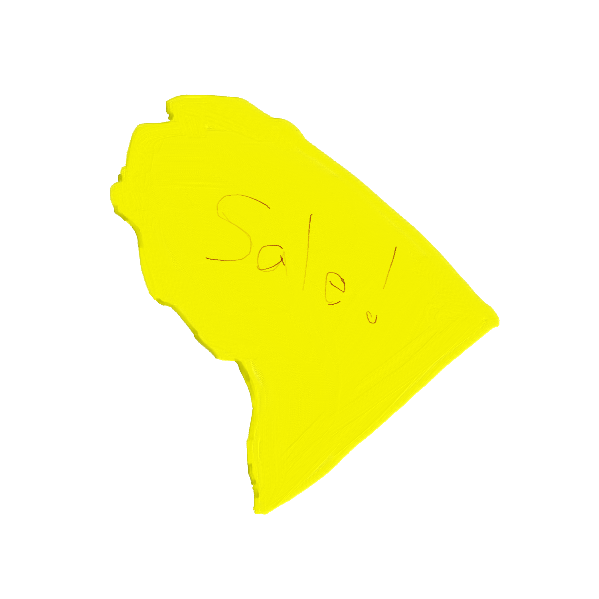

What's For Sale? The sidewalk? haha. I think that most logically, this ended up here from a sign someone put on a pole for a stoop sale. But the handwriting was so scrawled, I dont know. Seems like someone would put more effort into a stoop sale advertisement... but the best stoop sale advertisement I've ever seen in the area was scrawled in colorful washable markers, width the message "Decode this message..... STALE POOS" (This is an anagram for Stoop Sale).
